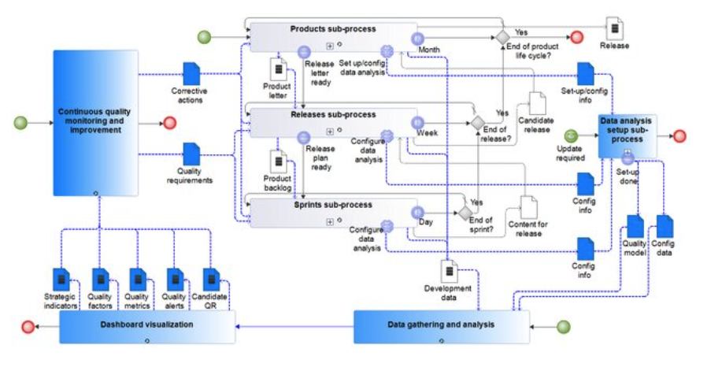
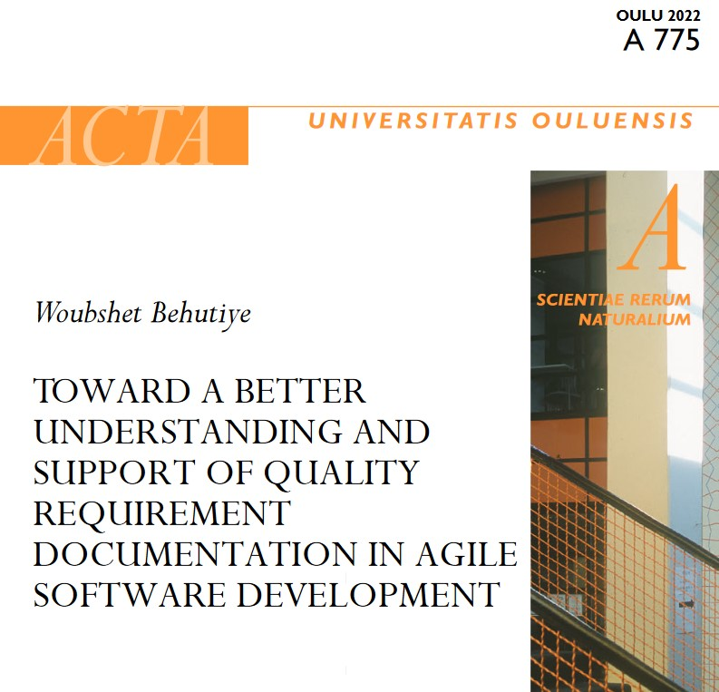

Evidence-Based Quality-Aware Agile Software Development Process: Design and Evaluation
Introduces and evaluates an evidence-based process for integrating continuous quality management into agile software development.
Research outputs
My work develops empirical knowledge and practical support for requirements engineering, software quality, agile development, technical debt, and software engineering education.
Featured research
These works represent key contributions across quality-aware agile development, requirements documentation, evidence synthesis, and education.

Introduces and evaluates an evidence-based process for integrating continuous quality management into agile software development.

Synthesizes empirical knowledge and introduces practical support for documenting quality requirements in agile software development.
Presents practitioner-evaluated guidelines developed through design science research to support quality-requirement documentation.
View DOI →Maps quality metrics and management indicators used in agile and rapid software-development contexts.
View DOI →Publication record
Filter the list by publication type. Canonical DOI or publisher links are used wherever available.